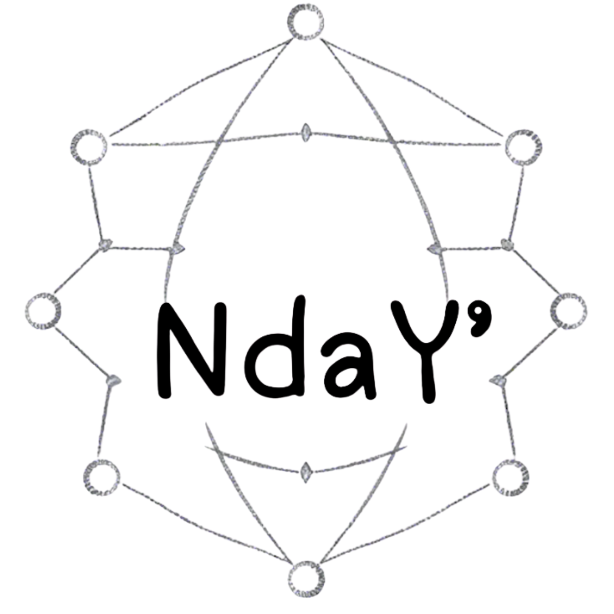

An enterprise dedicated to addressing development challenges through innovative digital platforms.
Explore Our ProjectsAn AI-powered solution enhancing healthcare systems.

A cutting-edge AI-driven platform designed to improve healthcare systems by leveraging advanced diagnostics, patient care, and resource management.
Equipped with the IMCI (Integrated Management of Childhood Illness) Booklet
NdaY' Radoko drones serve as virtual health assistants, capable of traveling directly to households to assess, classify, treat, and counsel mothers of infants under 3 months
It also provides guidance to community health workers for children under 5 years.
>"Nanampy ireo menavava kelinay i drone NdaY'Radoko. Mba tsy entina eny @ tobipahasalamana alavitra, tsy reraka no tsy lany fotoana hanaraka ny fahasalamany."
- Bozy, Maman'i Botakely any Tanàana ambanivohitr'i Basalampy
A Dashboard Tool for Mayor.

A comprehensive communal management solution that uses digital platforms to streamline vital and administrative services at Communal level but delivered at door or nearby
"NdaY' Ben'ny Tanàna has transformed our community with digital innovative solutions."
- Unkown, Mayor of the City's city
"NdaY' Ben'ny Tanàna facilites our services request mainly by printing anywhere trusted and legal vital document."
- Unkown, Mayor of the City's city
A Smarter, Safer, Cleaner Community
A waste collection management system.
NdaY' Fako is a cutting-edge digital platform designed to transform waste management and public services, while aligning with the vision of a connected world enjoying a high standard of living. By empowering Mayors and local governments, the platform enhances the delivery of critical WASH (Water, Sanitation, and Hygiene) services and extends these solutions directly to households.
At its core, NdaY' Fako harnesses smartphones and QR codes to modernize the management of bins, optimize collection processes, and guarantee safety and security for community members. The solution promotes proximity services by bringing essential sanitation and hygiene services directly to people’s doors.
Through innovative features, such as real-time tracking of waste collectors, secure bin identification via QR codes, and smart data integration, NdaY' Fako strengthens municipal operations and citizen engagement, contributing to healthier and safer living environments for all.
"NdaY' Fako is helping us to more clean and care about sorted waste that can be recycled according theirs sortings."
- Householder, at Alasora's Mayor, Antananarivo Avaradrano
A premier doorstep hairstyling service that embodies the vision of a connected world enjoying a high standard of life.
It brings professional, stylish, and beautifully groomed hair directly to your door.
Combining convenience with exceptional quality, the service leverages a network of skilled stylists to deliver personalized care, fostering connection and confidence in every home it serves.
"Fiahiana minday, volo bikaina an-trano". "Caring connected people, stylish, beautifully groomed hair at home"
"Tsy very fotoana anaty fitohanana, mampiasa finday dia bikain'ireo mpanao volo, matianina sady tiako,tsara ato antrano."
- Salohy Jejo, at CRAL Ampitatafika, Antananarivo Atsimondrano